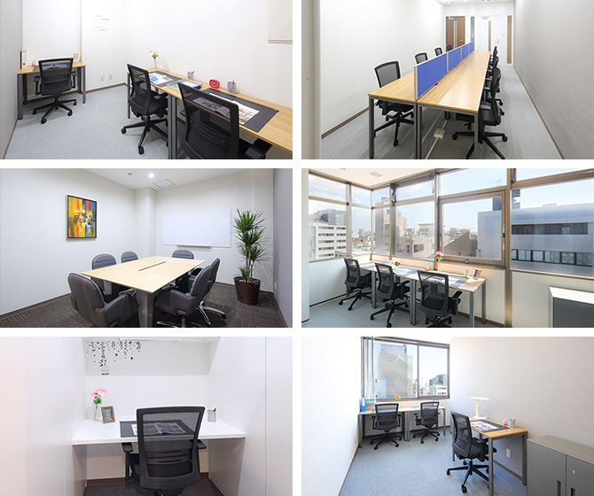

【個室レンタルオフィス】
オープンオフィス立川駅南
オープンオフィス立川駅南がNEW OPEN
オープンオフィス立川駅南は、ＪＲ立川駅の南口より徒歩4分。すずらん通りに面する視認性の高いロケーションです。
立川を拠点とする企業のオフィスとしてはもちろん、起業や新規営業所の開設、面接会場などにも最適なレンタルオフィスです。
1名用のお部屋から、10名以上のお部屋まで、お客様のビジネスの状況に合わせてご利用ください。
オープンオフィス立川駅南が提供するオフィスサービス
-
 高速インターネット＜光ファイバー＞
高速インターネット＜光ファイバー＞
- 100Mbpsの光ファイバーによるブロードバンド環境をご用意しました。各部屋に配線済みですので、パソコンに繋げばすぐLAN経由で高速インターネットを利用出来ます。
-
 ネットワーク・カラーレーザープリンタ+スキャナー
ネットワーク・カラーレーザープリンタ+スキャナー
- ネットワークを利用して、各お部屋のパソコンから印刷できます。プリンタをご用意いただく必要もございません。
スキャナー機能も搭載しております。
-
 カラーレーザーコピー
カラーレーザーコピー
- フロア内にご用意してあります。カード方式でコピーが出来ますので、小銭の準備が不要です。
-
 ICカードキーによる入室管理
ICカードキーによる入室管理
- 専用ICカードを使ったホテル式のスマートシステムを用いて、セキュリティーを向上させています。
-
 ミーティングルーム（会議室）
ミーティングルーム（会議室）
- 商談・会議にご利用いただける共有スペースをご用意しています。インターネットで簡単に予約をしていただけます。
-
 無線LAN（WiFi）
無線LAN（WiFi）
- 共有スペースとミーティングスペースにて、無線LAN(WiFi)サービスをご利用いただけます。

オープンオフィス立川駅南の特徴

西東京エリアの中心都市、立川。
立川駅南口より徒歩5分
すずらん通り面す、視認性の高いオフィスビル
営業所、プロジェクトルーム、面接会場にも最適
24時間利用可能
オフィス周辺のMap
オープンオフィス立川駅南近隣のスポット
- ■銀行
- みずほ銀行 立川支店
三井住友銀行 立川支店
三菱東京UFJ銀行 立川支店
りそな銀行 立川支店
たましん 南口支店
西武信用金庫 立川南口支店
東日本銀行 立川支店
東京都民銀行 立川支店 - ■レストラン
- キハチ 伊勢丹立川（イタリアン）
Restautant27（フレンチ）
よこ山（和食懐石）
トレモンテ 立川（イタリアン）
リュドコマンセナチュール（フレンチ） - ■ホテル
- フォレスト・イン 昭和館
ホテルメッツ立川 東京
パレスホテル立川
ホテル日航立川 東京
立川グランドホテル - ■レジャー
- コナミスポーツクラブ立川
- ■映画館
- シネマシティ
オープンオフィス立川駅南の住所・アクセス
- 住所:
- 東京都立川市錦町1-4-20 ＴＳＣビル 5F,6F
- 空港からのアクセス:
- 羽田空港から品川・新宿を経由し、「立川」駅まで約60分
羽田空港から立川駅北口までリムジンバスで約60分～80分
成田空港から立川駅北口までリムジンバスで約120分 - 電車からのアクセス:
- JR「立川」駅南口より徒歩4分
多摩都市モノレール「立川南」駅より徒歩7分 - お車でのアクセス:
- 立川駅南口 駅前ロータリーより、すずらん通りに入り約300ｍ 進み左手
オープンオフィス立川駅南のフロアマップ
5F

6F

※フロア内は禁煙です。
※こちらはイメージ図となりますので、状況が異なる場合は現況を優先させていただきます。
- ◆初回納入金
- 利用料1ヶ月分の保証金
- ◆共益費
- 水道光熱費、ビル共益費、ゴミ出し、フロア・トイレの清掃、共有部分の消耗品代を含みます。
リージャスグループの説明
リージャス・グループは、柔軟なワークスペースを提供する世界最大の企業です。そのネットワークは世界120カ国1,100都市、3300拠点に及びます。会員数は250万人で、業界で成功を収める大小様々な企業や起業家の方々にご利用いただいています。
リージャスは、個室タイプのレンタルオフィス、コワーキングスペースなど多彩なオフィスプラン、近年需要が高まるモバイルワークやバーチャルオフィス、障害復旧サービスの提供を通じ、お客様が予算やワークスタイルに合わせて仕事を行うことができる環境を提供いたします。